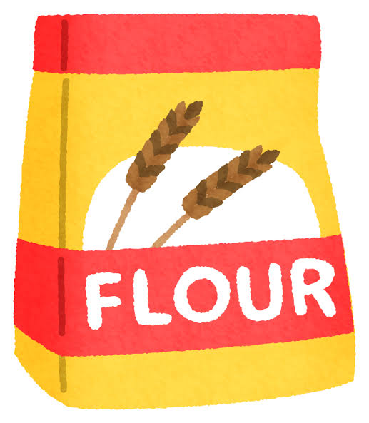

<!DOCTYPE html>
<html>
    <head>
        <title>Intergalactic Kitchen</title>
        <script src="https://unpkg.com/jspsych@7.3.4"></script>
        <!-- Use the HTML Form plugin -->
        <script src="https://unpkg.com/@jspsych/plugin-survey-html-form@1.0.3"></script>
        <script src="https://unpkg.com/@jspsych/plugin-html-keyboard-response@1.1.3"></script>
        <script src="https://unpkg.com/@jspsych/plugin-instructions@1.1.4"></script>
        <script src="https://unpkg.com/@jspsych/plugin-preload@1.1.3"></script>
        <script src="https://unpkg.com/@jspsych/plugin-html-button-response@1.2.0"></script>
        <link href="https://unpkg.com/jspsych@7.3.4/css/jspsych.css" rel="stylesheet" type="text/css" />
        
        <style>
            /* 1. Hide the default HTML checkbox */
            .ingredient-btn input[type="checkbox"] {
                display: none;
            }
    
            /* 2. Style the label to look like a clickable card */
            .ingredient-btn label {
                display: inline-block;
                border: 4px solid transparent; /* Invisible border until clicked */
                border-radius: 12px;
                padding: 10px;
                cursor: pointer;
                transition: all 0.2s ease-in-out;
                background-color: #f9f9f9;
            }
    
            /* 3. When checked, highlight the label border and background */
            .ingredient-btn input[type="checkbox"]:checked + label {
                border-color: #4CAF50; /* Green highlight */
                background-color: #e8f5e9; /* Light green background */
                transform: scale(1.05); /* Slight pop-out effect */
            }
    
            /* 4. Ensure images fit nicely inside the buttons */
            .ingredient-btn img {
                width: 150px;
                height: 150px;
                object-fit: contain;
                border-radius: 8px;
                display: block;
                margin-bottom: 8px;
            }
    
            /* Container for the grid */
            .ingredient-grid {
                display: flex;
                gap: 20px;
                justify-content: center;
                flex-wrap: wrap;
                margin-bottom: 30px;
            }
        </style>
    </head>
  <body>
    <!-- The experiment will render here -->
  </body>
  <script>
const jsPsych = initJsPsych({
    on_finish: function() {
        jsPsych.data.displayData(); 
    }
});

const timeline = [];
// Define the correct ingredients
// Define all possible ingredients that correspond to your checkboxes
// The master pool for unconstrained generation and UI rendering
const ingredient_pool = ["YHex", "RSquare", "PSquare", "RTri", "PTri"];

// The categorical groups for constrained generation
const shape_groups = {
    hex: ["YHex"],
    square: ["RSquare", "PSquare"],
    tri: ["RTri", "PTri"]
};

const structural_groups = ['unconstrained_unknown', 'constrained_unknown', 'constrained_known'];

// 2. Randomly select one group
// const assigned_group = structural_groups[Math.floor(Math.random() * structural_groups.length)];

const assigned_group = "constrained_known"

// 3. Set the logic flags based on the assignment
let use_constrained_rules = false;
let participant_gets_hint = false;

if (assigned_group === 'constrained_unknown') {
    use_constrained_rules = true;
} else if (assigned_group === 'constrained_known') {
    use_constrained_rules = true;
    participant_gets_hint = true;
}

const rounds_count = [];
const rounds_correct_num = [];
const rounds_distance = [];
const number_of_rounds_per_block = 1; // Change this to set the number of rounds

// Helper function to keep generation clean
function generateTargetRecipe() {
    let random_recipe = [];
    if (use_constrained_rules) {
        for (const shape_category of Object.values(shape_groups)) {
            if (Math.random() > 0.20) {
                const random_item = shape_category[Math.floor(Math.random() * shape_category.length)];
                random_recipe.push(random_item);
            }
        }
        if (random_recipe.length === 0) {
             const fallback_shape = Object.values(shape_groups)[Math.floor(Math.random() * 3)];
             random_recipe.push(fallback_shape[Math.floor(Math.random() * fallback_shape.length)]);
        }
    } else {
        const num_ing = Math.floor(Math.random() * ingredient_pool.length) + 1;
        random_recipe = jsPsych.randomization.sampleWithoutReplacement(ingredient_pool, num_ing);
    }
    return random_recipe;
}

// Generate the blocks
for (let i = 0; i < number_of_rounds_per_block; i++) {
    rounds_count.push({ target_recipe: generateTargetRecipe(), feedback_type: 'count' });
    rounds_correct_num.push({ target_recipe: generateTargetRecipe(), feedback_type: 'correct_num' });
    rounds_distance.push({ target_recipe: generateTargetRecipe(), feedback_type: 'distance' });
}

const visual_pot_trial = {
    type: jsPsychSurveyHtmlForm,
    preamble: `
    <div style="text-align: center;">
      <h1>The Soup Pot</h1>
      
    </div>
    <p>Select the ingredients to add to the pot:</p>
  `,
    html: `
        <div class="ingredient-grid">
            <!-- Ingredient 1 -->
            <div class="ingredient-btn">
                <input type="checkbox" id="item_carrots" name="ing_1" value="YHex">
                <label for="item_carrots">
                    
                    <strong>Carrots</strong>
                </label>
            </div>

            <!-- Ingredient 2 -->
            <div class="ingredient-btn">
                <input type="checkbox" id="item_onions" name="ing_2" value="RSquare">
                <label for="item_onions">
                    
                    <strong>Onions</strong>
                </label>
            </div>

            <!-- Ingredient 3 -->
            <div class="ingredient-btn">
                <input type="checkbox" id="item_peppers" name="ing_3" value="PSquare">
                <label for="item_peppers">
                    
                    <strong>Peppers</strong>
                </label>
            </div>

            <!-- Ingredient 4 -->
            <div class="ingredient-btn">
                <input type="checkbox" id="item_chicken" name="ing_4" value="RTri">
                <label for="item_chicken">
                    
                    <strong>Chicken</strong>
                </label>
            </div>

            <!-- Ingredient 5 -->
            <div class="ingredient-btn">
                <input type="checkbox" id="item_beef" name="ing_5" value="PTri">
                <label for="item_beef">
                    
                    <strong>Beef</strong>
                </label>
            </div>
            
            <!-- Add as many ingredients as you need following this pattern -->
        </div>
    `,
    button_label: "Taste the Soup",
    on_start: function() {
        // Fetch the target recipe for this specific round
        current_secret_recipe = jsPsych.timelineVariable('target_recipe');
    },
    on_finish: function(data) {
        attempt_count++; 
        
        const user_selection = Object.values(data.response);
        last_user_selection = user_selection;
        
        // Evaluate against the dynamic current_secret_recipe
        const is_correct = (user_selection.length === current_secret_recipe.length) && 
                           user_selection.every(item => current_secret_recipe.includes(item));
        
        recipe_matched = is_correct;
        
        // Save round data
        data.attempt_number = attempt_count;
        data.was_correct = is_correct;
        data.target_recipe = current_secret_recipe;
        data.ingredients_chosen = user_selection;
    }
};

// System A: Standard Binary Feedback
function getBinaryFeedback(is_correct, attempts) {
    if (is_correct) {
        return `
            <h1 style="color: green;">Delicious!</h1>
            <p>You found the secret recipe in <strong>${attempts}</strong> attempts.</p>
            <p>Press any key to start the next recipe.</p>
        `;
    } else {
        return `
            <h1 style="color: red;">Not quite...</h1>
            <p>That doesn't taste right. Press any key to empty the pot and try again.</p>
        `;
    }
}

// System B: Count Feedback (Intersection of arrays)
function getCountFeedback(selection, target) {
    // Count how many items in the user's selection exist in the target recipe
    const correct_count = selection.filter(item => target.includes(item)).length;
    
    return `
        <h1 style="color: orange;">Taste Test</h1>
        <p>You included <strong>${correct_count}</strong> correct ingredients!</p>
        <p>Press any key to empty the pot and try again.</p>
    `;
}

// System C: Correct Number Feedback 
function getCorrectNumFeedback(selection, target, pool) {
    let correctly_included = 0;
    let correctly_excluded = 0;

    // Loop through every possible ingredient in the master pool
    pool.forEach(item => {
        const is_in_target = target.includes(item);
        const is_in_selection = selection.includes(item);

        if (is_in_target && is_in_selection) {
            // It belonged in the soup, and the user added it
            correctly_included++;
        } else if (!is_in_target && !is_in_selection) {
            // It did NOT belong in the soup, and the user left it out
            correctly_excluded++;
        }
    });

    const total_correct_decisions = correctly_included + correctly_excluded;

    return `
        <h1 style="color: #2196F3;">Kitchen Analysis</h1>
        <p>You made <strong>${total_correct_decisions}</strong> correct ingredient decisions out of ${pool.length}!</p>
        <p>Press any key to empty the pot and try again.</p>
    `;
}

// System D: Correct Number Feedback 
function getDistanceFeedback(selection, target, pool) {
    let correctly_included = 0;
    let correctly_excluded = 0;

    // Loop through every possible ingredient in the master pool
    pool.forEach(item => {
        const is_in_target = target.includes(item);
        const is_in_selection = selection.includes(item);

        if (is_in_target && is_in_selection) {
            // It belonged in the soup, and the user added it
            correctly_included++;
        } else if (!is_in_target && !is_in_selection) {
            // It did NOT belong in the soup, and the user left it out
            correctly_excluded++;
        }
    });

    const total_distance = pool.length - correctly_included - correctly_excluded;

    return `
        <h1 style="color: #2196F3;">Kitchen Analysis</h1>
        <p>You need to make <strong>${total_distance}</strong> changes to the ingredients!</p>
        <p>Press any key to empty the pot and try again.</p>
    `;
}

const feedback_trial = {
    type: jsPsychHtmlKeyboardResponse,
    stimulus: function() {
        // 1. Fetch the assigned condition for this specific round
        const current_feedback_type = jsPsych.timelineVariable('feedback_type');
        
        // 2. If they won, always show the success screen using the binary function
        if (recipe_matched) {
            return getBinaryFeedback(true, attempt_count);
        }
        
        // 3. If they are incorrect, route them to the assigned feedback system
        if (current_feedback_type === 'count') {
            return getCountFeedback(last_user_selection, current_secret_recipe);
        } else if (current_feedback_type === 'binary') {
            return getBinaryFeedback(false, attempt_count);
        } else if (current_feedback_type == 'correct_num') {
            return getCorrectNumFeedback(last_user_selection, current_secret_recipe, ingredient_pool);
        } else {
            return getDistanceFeedback(last_user_selection, current_secret_recipe, ingredient_pool)
        }
    },
    on_finish: function() {
        // Only reset the counter if they are moving on to a new round
        if (recipe_matched) {
            attempt_count = 0;
        }
    }
};

const recipe_loop = {
    timeline: [visual_pot_trial, feedback_trial],
    loop_function: function() {
        if (recipe_matched) {
            // If they got it right, return false to BREAK the loop
            return false; 
        } else {
            // If they got it wrong, return true to REPEAT the timeline
            return true; 
        }
    }
};

// Bind them to jsPsych procedures
const procedure_count = { timeline: [recipe_loop], timeline_variables: rounds_count };
const procedure_correct_num = { timeline: [recipe_loop], timeline_variables: rounds_correct_num };
const procedure_distance = { timeline: [recipe_loop], timeline_variables: rounds_distance };

// Tracking variables
let attempt_count = 0;
let recipe_matched = false;
let current_secret_recipe = []; // This will update dynamically per round
let last_user_selection = [];


// Define the custom HTML form

const instructions_known = {
    type: jsPsychInstructions,
    pages: [
        `<h1>The Shape Puzzle</h1>
         <p>You must discover the secret combination of shapes.</p>
         <p><strong>The Golden Rule:</strong> The combination follows a strict structure. 
         Your final selection will contain <strong>at most one</strong> item from each of the following shape categories:</p>
         <div style="text-align: left; display: inline-block; max-width: 400px;">
             <ul>
                <li>1 Hexagon (YHex)</li>
                <li>1 Square (RSquare, PSquare)</li>
                <li>1 Triangle (RTri, PTri)</li>
             </ul>
         </div>
         <p>Some shapes might be left out entirely, but the secret recipe will never contain two shapes of the same type (for example, you will never need both squares).</p>`
    ],
    show_clickable_nav: true
};


// ---------------------------------------------------------
// 1. UI Training (Page 1)
// ---------------------------------------------------------
const ui_instructions = {
  type: jsPsychInstructions,
  pages: [
    `<h1>Welcome to The Intergalactic Kitchen!</h1>
     <p>In this experiment, you find yourself on an alien spaceship. Your goal is to discover a secret soup recipe.</p>
     <p>You will see a list of ingredients. You can click on any ingredient to add it to your pot, and click it again to remove it.</p>
     <p><strong>Practice Trial:</strong> To get used to the controls, let's make a specific soup using ingredients from your home planet.</p>
     <p>The recipe for this round is exactly <strong>Onions</strong> and <strong>AP Flour</strong>.</p>
     <p>Click "Next" to practice selecting these two ingredients.</p>`
  ],
  show_clickable_nav: true
};

const instructions_intersection = {
  type: jsPsychInstructions,
  pages: [
    `<h1>How to Win: The "Intersection" Score</h1>
     <p>You will not know the secret recipe in advance. Instead, after every guess, the system will give you a score.</p>
     <p><strong>The Rule:</strong> Your score is the exact number of ingredients in your pot that are <em>also</em> in the secret recipe.</p>
     <p>Here are three examples of how this works. Let's imagine the secret recipe is <strong>[Onions, Beef]</strong>.</p>
     <div style="text-align: left; display: inline-block; max-width: 600px;">
         <ul>
            <li><strong>Example A - The Partial Match:</strong><br>You guess: [Onions, Carrots]<br><strong>Score: 1</strong> (You correctly included Onions. Carrots are ignored.)</li>
            <li><br><strong>Example B - The Complete Miss:</strong><br>You guess: [AP Flour, Carrots]<br><strong>Score: 0</strong> (Neither ingredient is in the secret recipe.)</li>
            <li><br><strong>Example C - The Over-Guess:</strong><br>You guess: [Onions, Beef, AP Flour]<br><strong>Score: 2</strong> (You successfully included both Onions and Beef. The extra AP Flour does not hurt your score.)</li>
         </ul>
     </div>
     <p>Now you will return back to the kitchen full of alien ingredients</p>
     <p>Your goal is to use these scores to deduce the secret recipe in as few guesses as possible!</p>`
  ],
  show_clickable_nav: true
};

const instructions_action_model = {
  type: jsPsychInstructions,
  pages: [
    `<h1>How to Win: The "Steps Away" Score</h1>
     <p>You will not know the secret recipe in advance. Instead, after every guess, the system will give you a score.</p>
     <p><strong>The Rule:</strong> Your score tells you exactly how many <em>actions</em> (adding a missing ingredient or removing an incorrect one) you need to take to fix your pot. A score of 0 means you found the exact recipe!</p>
     <p>Here are three examples of how this works. Let's imagine the secret recipe is <strong>[Onions, Beef]</strong>.</p>
     <div style="text-align: left; display: inline-block; max-width: 600px;">
         <ul>
            <li><strong>Example A - The Partial Match:</strong><br>You guess: [Onions, Carrots]<br><strong>Score: 2</strong> (You need to take 2 actions: remove the Carrots, and add the Beef.)</li>
            <li><br><strong>Example B - The Complete Miss:</strong><br>You guess: [AP Flour, Carrots]<br><strong>Score: 4</strong> (You need to take 4 actions: remove AP Flour, remove Carrots, add Onions, add Beef.)</li>
            <li><br><strong>Example C - The Over-Guess:</strong><br>You guess: [Onions, Beef, AP Flour]<br><strong>Score: 1</strong> (You are only 1 action away: remove the AP Flour.)</li>
         </ul>
     </div>
     <p>Now you will return back to the kitchen full of alien ingredients</p>
     <p>Your goal is to use these scores to get your steps down to 0 in as few guesses as possible!</p>`
  ],
  show_clickable_nav: true
};

const instructions_correct_num = {
    type: jsPsychInstructions,
    pages: [
        `<h1>How to Win: Total Correct Decisions</h1>
         <p>After every guess, the system will evaluate all 5 shapes in the pool.</p>
         <p><strong>The Rule:</strong> Your score is the total number of correct decisions you made. You get a point for every correct shape you <strong>included</strong>, AND a point for every incorrect shape you successfully <strong>left out</strong>.</p>
         <p>Here are three examples of how this works. Let's imagine the secret combination is exactly <strong>[YHex, RSquare]</strong>.</p>
         <div style="text-align: left; display: inline-block; max-width: 650px;">
             <ul>
                <li><strong>Example A - The Partial Match:</strong><br>
                You guess: [YHex, PSquare]<br>
                <strong>Score: 3</strong> <br>
                <em>(You correctly included YHex, and you correctly left out RTri and PTri. However, you missed RSquare and added an extra PSquare.)</em></li>
                
                <li><br><strong>Example B - The Over-Guess:</strong><br>
                You guess: [YHex, RSquare, PTri]<br>
                <strong>Score: 4</strong> <br>
                <em>(You successfully included both YHex and RSquare, and correctly left out PSquare and RTri. You only lost one point for adding the extra PTri.)</em></li>
                
                <li><br><strong>Example C - The Complete Miss:</strong><br>
                You guess: [PTri]<br>
                <strong>Score: 2</strong> <br>
                <em>(You missed both YHex and RSquare, and incorrectly added PTri. However, you still earn 2 points because you successfully made the correct decision to leave out PSquare and RTri!)</em></li>
             </ul>
         </div>
         <p>Your goal is to use these scores to get a perfect 5 out of 5 in as few guesses as possible!</p>`
    ],
    show_clickable_nav: true
};

const practice_trial = {
    type: jsPsychSurveyHtmlForm,
    html: `
        <div style="text-align: center;">
            <h1>The Soup Pot (Practice)</h1>
            
        </div>
        <p style="color: red; font-weight: bold; text-align: center; font-size: 1.2rem;">
            Select exactly Onions and AP Flour.
        </p>
        
        <!-- Your custom CSS grid -->
        <div class="ingredient-grid">
            
            <!-- Ingredient 1 -->
            <div class="ingredient-btn">
                <input type="checkbox" id="onions" name="onion" value="Onions">
                <label for="onions">
                    
                    <br><strong>Onions</strong>
                </label>
            </div>

            <!-- Ingredient 2 -->
            <div class="ingredient-btn">
                <input type="checkbox" id="carrots" name="carrots" value="Carrots">
                <label for="carrots">
                    
                    <br><strong>Carrots</strong>
                </label>
            </div>

            <!-- Ingredient 3 -->
            <div class="ingredient-btn">
                <input type="checkbox" id="beef" name="beef" value="Beef">
                <label for="beef">
                    
                    <br><strong>Beef</strong>
                </label>
            </div>

            <!-- Ingredient 4 -->
            <div class="ingredient-btn">
                <input type="checkbox" id="ap_flour" name="ap_flour" value="AP Flour">
                <label for="ap_flour">
                    
                    <br><strong>AP Flour</strong>
                </label>
            </div>

        </div>
    `,
    button_label: 'Submit Recipe'
};

const practice_feedback = {
    type: jsPsychHtmlKeyboardResponse,
    stimulus: function() {
        // Grab the form data from the PREVIOUS trial (index 1 step back)
        const last_trial_data = jsPsych.data.get().last(1).values()[0];
        const responses = last_trial_data.response;
        
        // Extract the checked values into a clean array
        const selected = Object.values(responses);
        
        const has_onion = selected.includes('Onions');
        const has_flour = selected.includes('AP Flour'); 
        const exactly_two = selected.length === 2;
        
        // Mimic your actual feedback logic
        if (has_onion && has_flour && exactly_two) {
            // Mimic the getBinaryFeedback(true) success screen
            return `
                <div style="text-align: center;">
                    <h1 style="color: green;">Success!</h1>
                    <p>You found the secret recipe.</p>
                    <p>Press any key to continue to the experiment.</p>
                </div>
            `;
        } else {
            // Mimic the failure screen with practice guidance
            const user_picks = selected.length > 0 ? selected.join(', ') : 'Nothing';
            return `
                <div style="text-align: center;">
                    <h1 style="color: red;">Not quite!</h1>
                    <p>You selected: <strong>${user_picks}</strong></p>
                    <p>Remember, the practice recipe is exactly <strong>Onions</strong> and <strong>AP Flour</strong>.</p>
                    <p>Press any key to try again.</p>
                </div>
            `;
        }
    }
};

const practice_loop = {
    // Add the new feedback trial to the timeline sequence
    timeline: [practice_trial, practice_feedback], 
    
    loop_function: function() {
        // Look 2 steps back to find the jsPsychSurveyHtmlForm data
        const form_data = jsPsych.data.get().last(2).values()[0];
        const selected = Object.values(form_data.response);
        
        const has_onions = selected.includes('Onions');
        const has_flour = selected.includes('AP Flour');
        const exactly_two = selected.length === 2;
        
        if (has_onions && has_flour && exactly_two) {
            return false; // Exit the loop and move to the next instruction page
        } else {
            return true; // Restart the loop, sending them back to the soup pot
        }
    }
};

function shuffleArray(array) {
    for (let i = array.length - 1; i > 0; i--) {
        const j = Math.floor(Math.random() * (i + 1));
        [array[i], array[j]] = [array[j], array[i]];
    }
    return array;
}

const preload = {
  type: jsPsychPreload,
  images: ['img/pot.jpg']
};
timeline.push(preload);

// 4. Save this to your data so you can segment your analysis!
jsPsych.data.addProperties({
    structural_group: assigned_group
});


// Push tutorials
timeline.push(ui_instructions);
timeline.push(practice_loop);

if (participant_gets_hint) {
    timeline.push(instructions_known);
}

const block_order = shuffleArray(['count', 'correct_num', 'distance']);

jsPsych.data.addProperties({
    feedback_block_order: block_order.join('_')
});

for (const block of block_order) {
    if (block === 'count') {
        timeline.push(instructions_intersection); // Ensure this is defined
        timeline.push(procedure_count);
    } else if (block === 'correct_num') {
        timeline.push(instructions_correct_num);
        timeline.push(procedure_correct_num);
    } else if (block === 'distance') {
        timeline.push(instructions_action_model); // Ensure this is defined
        timeline.push(procedure_distance);
    }
}

// Push the master procedure to the timeline
jsPsych.run(timeline);

  </script>
</html>